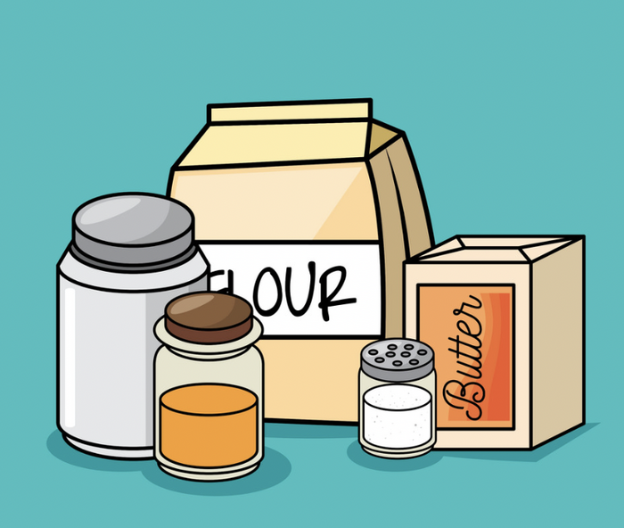

Frequently Asked Questions
- Question: Are the recipes customizable?
- Answer: Yes. You can change the ingredients for any of the recipes. There is no
guarantee it will be better or the same if you change the ingredients.
Feel free to be adventurous and try new things.
- Question: Is it beginner-friendly?
- Answer: Yes. All the recipes are easy to follow at your own pace.
- Question: How long will it take?
- Answer: Each recipe has it's own cook time. Most of the prep times are 30 minutes or less.
Then the cooking time is also usually 30 minutes or less. The average cooking time
is about 1 hour.

- Question: What are the ingredients?
- Answer: The ingredients for each meal are towards the top of each recipe.